Dell
17 projects

Dell Pro Max Mobile Family 2023
Dell Pro Max Mobile Workstations. Formerly Dell Precision. I led the design program for the Dell Pro Max Mobile Family across six systems spanning Dell's flagship commercial…
View case study →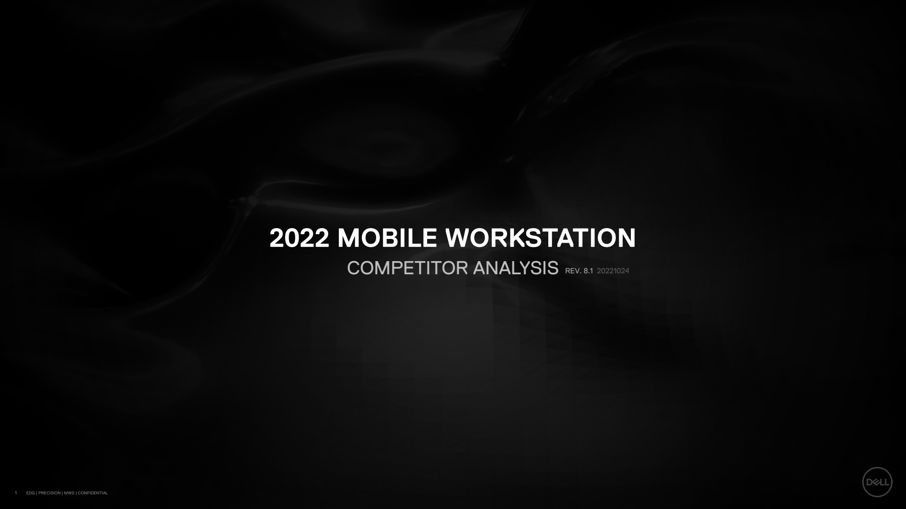
Dell Pro Max competitive analysis 2022
Early competitive analysis prior to the redesign of the new Dell Pro Max family of mobile products.
View case study →
Latitude Family Generation 14 2020-2021
Latitude Family of Products. Generation 14 I led the design program for the entire Dell Latitude commercial notebook family, spanning two product generations.
View case study →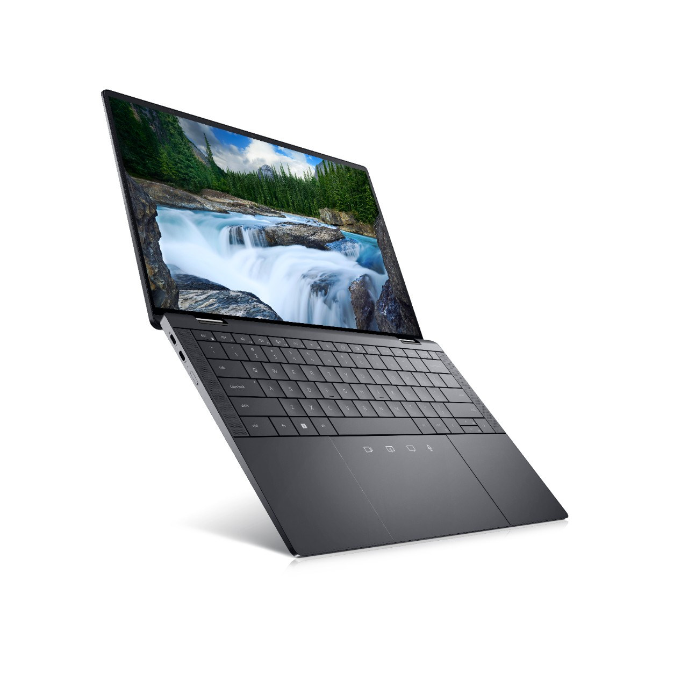
Latitude 9000 Design Development
Latitude 9000 Ultra Premium Line of commercial notebooks. Role, Design Director for this line of ultra premium products. Latitude 9000 wasn't about speeds and feeds.
View case study →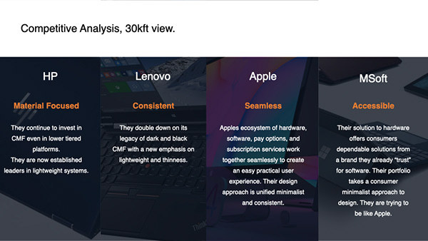
Latitude Generation 14 Competitve analysis 2020-2021
High level overview of how we stack up against our main competitors in easy digestible slides to initiate discussion of what we need to do next.
View case study →
Latitude 7000 Series Commercial Notebooks 2019
I led the design of the Dell Latitude 7000 series as Design Lead for the full commercial notebook family.
View case study →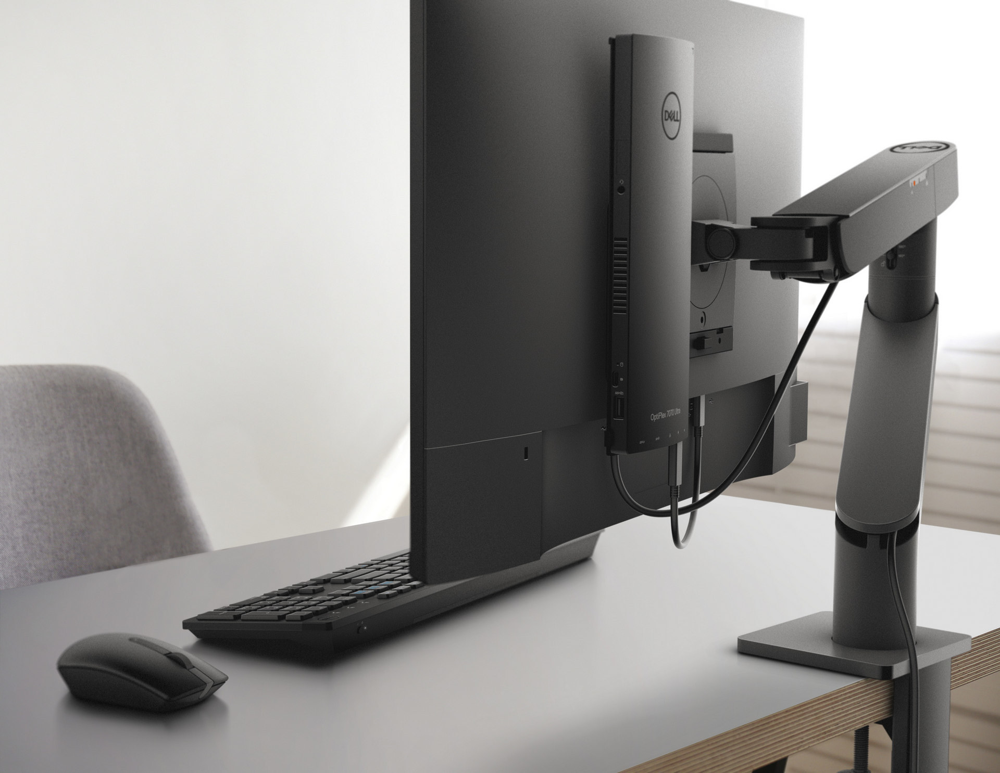
OptiPlex 7070 Ultra 2019
The OptiPlex 7070 Ultra solved a problem that didn't have a product yet, a complete desktop PC hidden inside a monitor stand
View case study →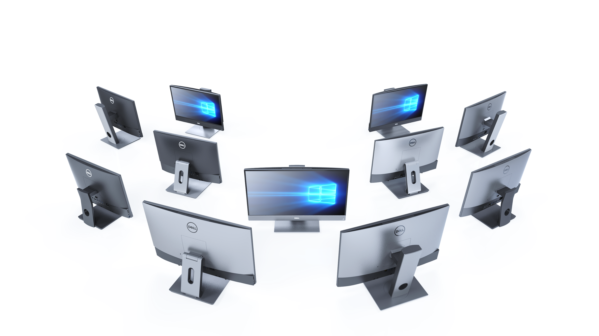
Dell Insprion and OptiPlex AIO families 2018
Optiplex and Inspiron All in One Desktops. Role: Project lead and team member I led the design of Dell's Inspiron and OptiPlex All-in-One desktop families across two generations
View case study →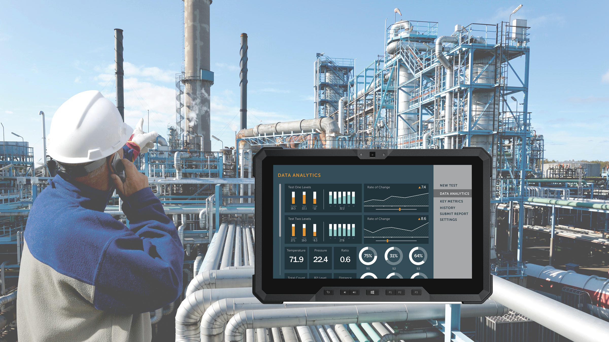
Dell Rugged Tablet 2015
Dell rugged 12 inch tablet with detachable kbd.
View case study →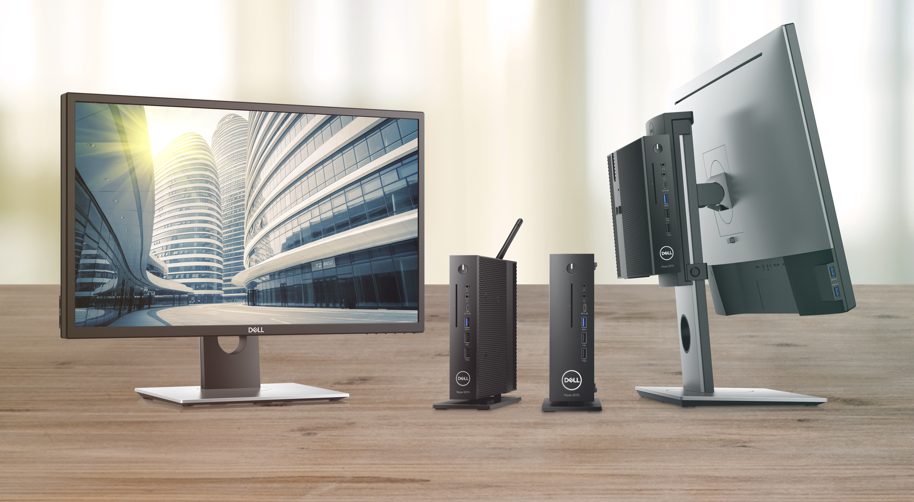
Dell Wyse project 2015
Dell WYSE Thin Client Program
View case study →
Dell Gaming 2015
I lead an external Design agency in the Design of this system for the Dell Gaming business. The goal was to create an entry level gaming box that .
View case study →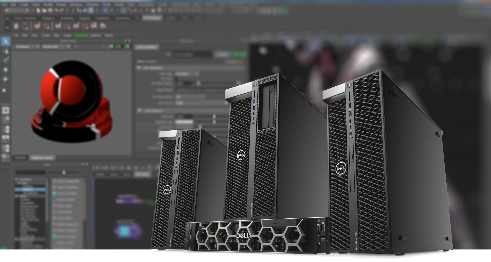
Dell Precision Work Station Family 2014
Bringing enterprise class design to the workstation. I lead internal teams and an outside design agency in the design and development of these systems.
View case study →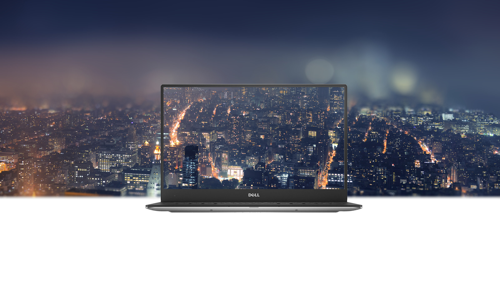
Dell XPS 13 2014
I was tasked with creating the first Infinity Edge notebook with this industry changing light weight notebook. We transformed this category of notebooks.
View case study →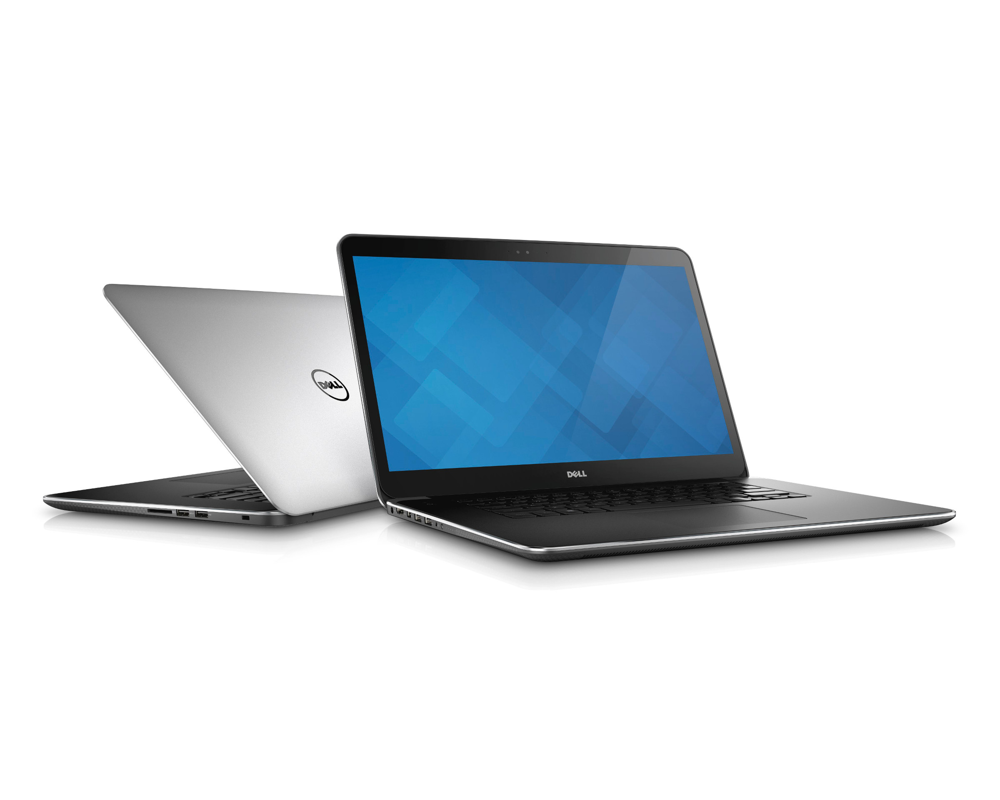
Dell XPS 15,and Dell Precision M3800 Work 2013
Dell XPS 15, XPS 15 Touch and Dell Precision M3800 Workstation Project Leader for this 15.6" ultrabook. A culmination in premium finishes for the ultimate notebook experience.
View case study →Latitude Z 2009
Dell Latitude Z 15" and 13" notebooks 2009 Role: Team member for 15" and project leader for 13" and accessories. A product for the Digital Nomad.
View case study →
Dell Latitude Family
Latitude Family of products,12", 13", 14", and 15" systems. 2009. Role: Team member and project leader. This was a complete redesign of the Latitude family of products.
View case study →
Dell Latitude 12" ultrabook 2008
View case study →Philips & IBM
4 projects
Philips Ultrasound CX50
Philips Ultrasound CX50. At Philips I was new hire to their North American Medical Design team.
View case study →
Philips HD11 Ultrasound Machine
Philips HD11 and HD3 Ultrasound Machines Role: Lead Designer I was a new hire into Philips Design North American Design team.
View case study →
Philips Nuclear Medicine 2006
Role: Project Leader. Working on Nuclear Medicine device that has high returns for the business on a 10 unit ~ ship per year.
View case study →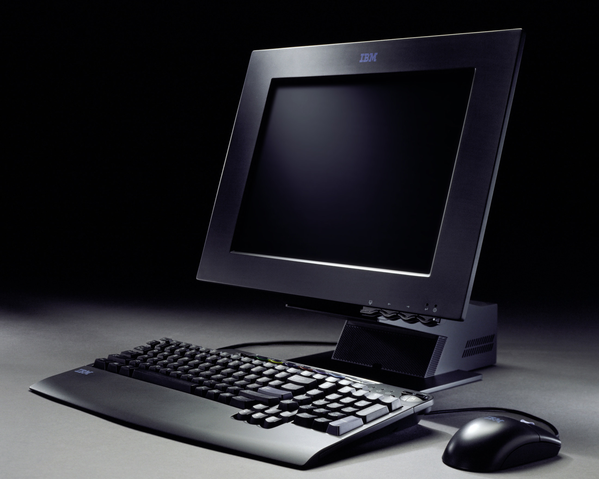
IBM NetVista All in One PC 1999
Role: Team Member iF award winner IDEA silver award winner Exhibited at the MOMA in the Work spheres exhibit.
View case study →Other work
4 projects
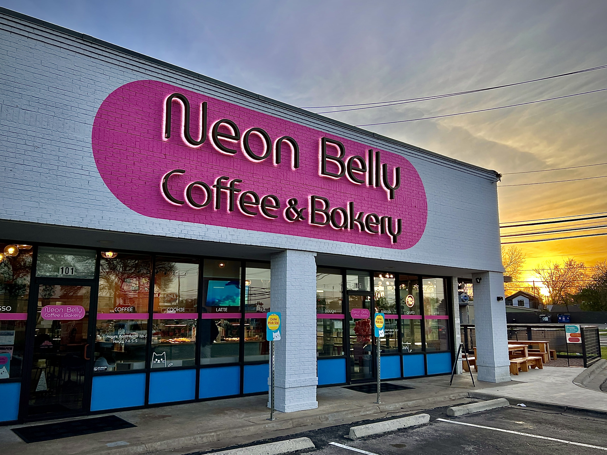
Neon Belly Coffee and Bakery
Neon Belly Coffee and Bakery. Brand, Interior, and Experience Design for this business. Opened November 2025.
View case study →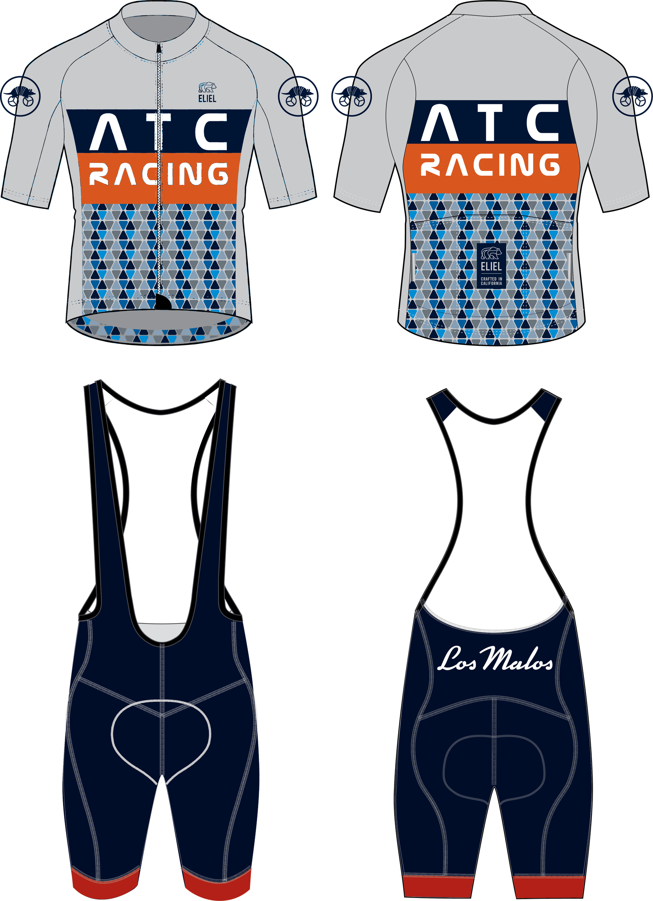
Cycling Kit Designs
Some of my fun past time of Designing kits for my cycling teams over the years.
View case study →
New Work Order 2021
This was a deck I created for my staff beginning 2021 as a reaction to the work from home mandate by the company.
View case study →
Application for Realtors 2016
We created this explainer video so that we could get the idea into as many hands as we could as we were developing this concept.
View case study →About
Costa — professionally Antonio Latto — works at the scale of product systems: design languages that hold across a family, the constraints of tooling and manufacture, and the conversations that get design through a business.
At IBM he contributed to the PC design language under Richard Sapper. At Philips he led medical hardware. At Dell he served as Design Director for Latitude generations 13 and 14, led the company’s product-line rebrand and the Pro Max redesign, and designed the first-generation OptiPlex 7070 Ultra.
He is now looking for work that applies that same care to furniture and the interiors people actually live in — pieces meant to stay, and to leave people at ease. He has been cycling for nearly forty years and is a former Cat 2 racer.
- IBMPC design language, under Richard Sapper
- PhilipsMedical hardware
- DellLatitude, Pro Max, OptiPlex 7070 Ultra
- PresentFurniture and lived-space design, Austin